프롬프트 인식하는 방법과 끝내는 방법
명령 라인(command line)에서 작업할 때, 프롬프트를 이식하지 못할 수도 있다. 이번 페이지에서 현재 위치를 파악하는 비밀정보(tip)와 만약 원하는 곳에 있지 않을 때 어떻게 탈출할 수 있는지 학습한다.
쉘 (Shell)
-
만약 쉘 프롬프트가
$이면, 현재 위치는 you are atbash가 된다.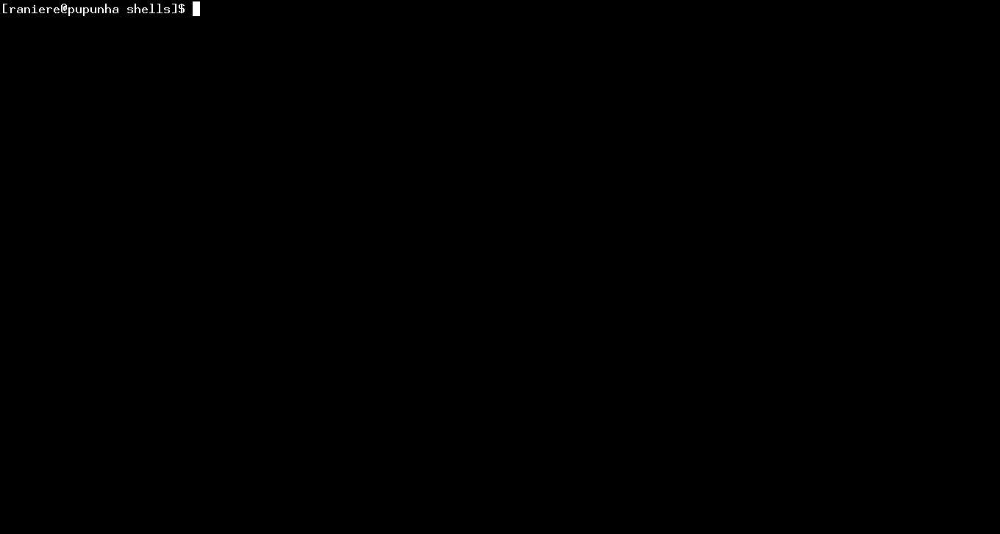
bash에서 탈출하기 위해서는exit를 타이핑하고ENTER키를 친다. -
만약 쉘 프롬프트가
>이면, 문자열을 지정하는데 쉘 명령 일부로'혹은"을 타이핑했을 수 있다. 하지만, 문자열을 마무리하기 위해서 상응하는'혹은"을 타이핑하지 않았다.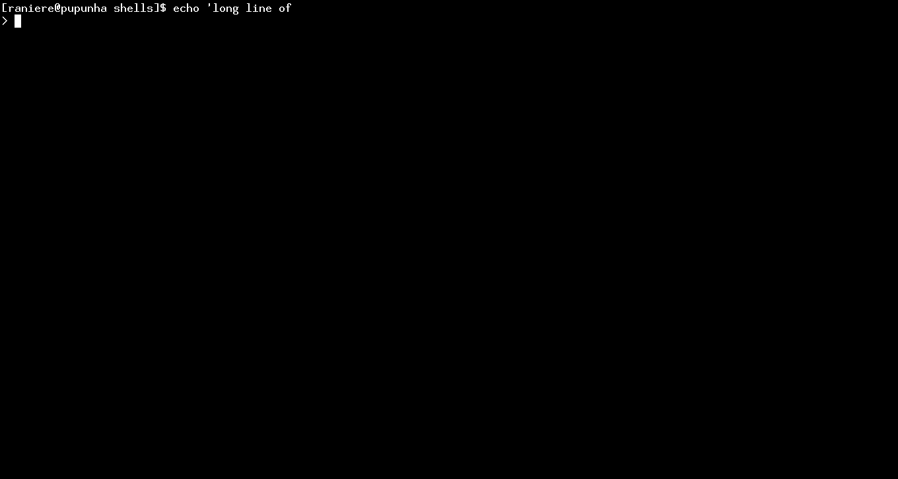
현재 명령을 중단하려면,
CTRL-C를 누른다. -
만약 쉘 윈도우 하단 왼쪽에
--More--가 보인다면,more를 사용해서 파일을 보고있다.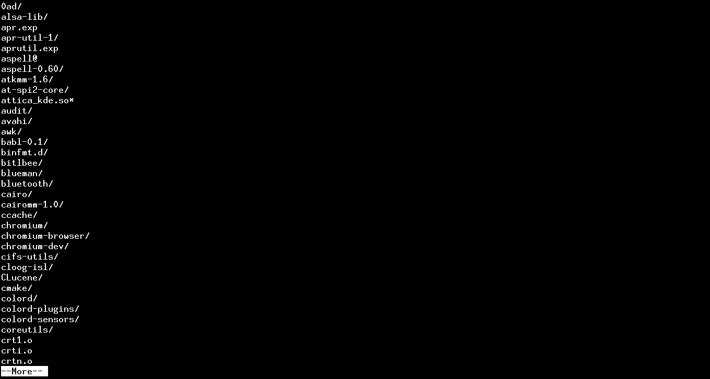
more에서 나가려면,q를 누른다. -
만약 쉘 윈도우 하단 왼편에
filename,:,(END)가 보인다면,less를 사용해서 파일을 보고있다.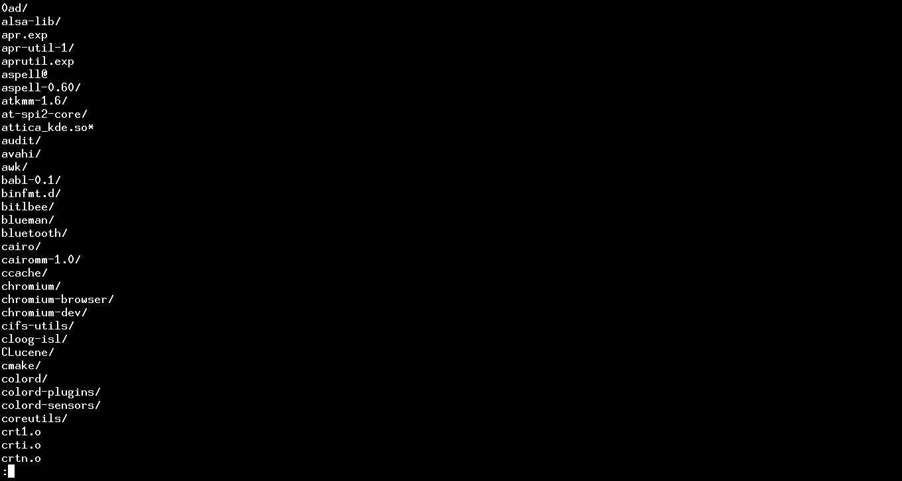
less에서 탈출하려면,q를 누른다. -
만약 쉘 윈도우 하단 왼편에
Manual page가 보인다면,man페이지를 보고 있다.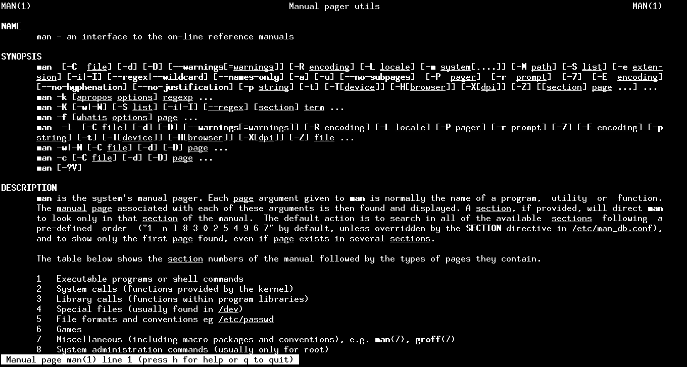
man에서 탈출하려면,q를 누른다. -
만약 쉘 윈도우 상단에 "GNU nano"가 보인다면,
nano텍스트 편집기에 있다.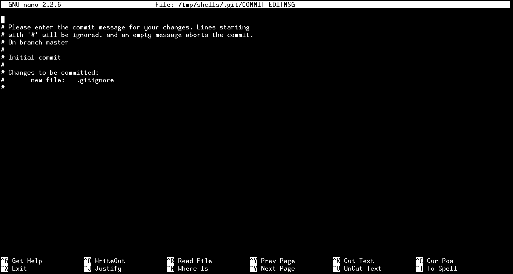
nano에서 탈출하려면,CTRL-X를 누른다. 만약 저장하지 못한 변경사항이 있다면, 저장하도록 질문을 받은데 -y를 눌러 저장하거나,n를 눌러 저장하지 않고 끝낸다. -
쉘 윈도우에 각 행 시작지점에
~가 보인다면,vi텍스트 편집기에 있다.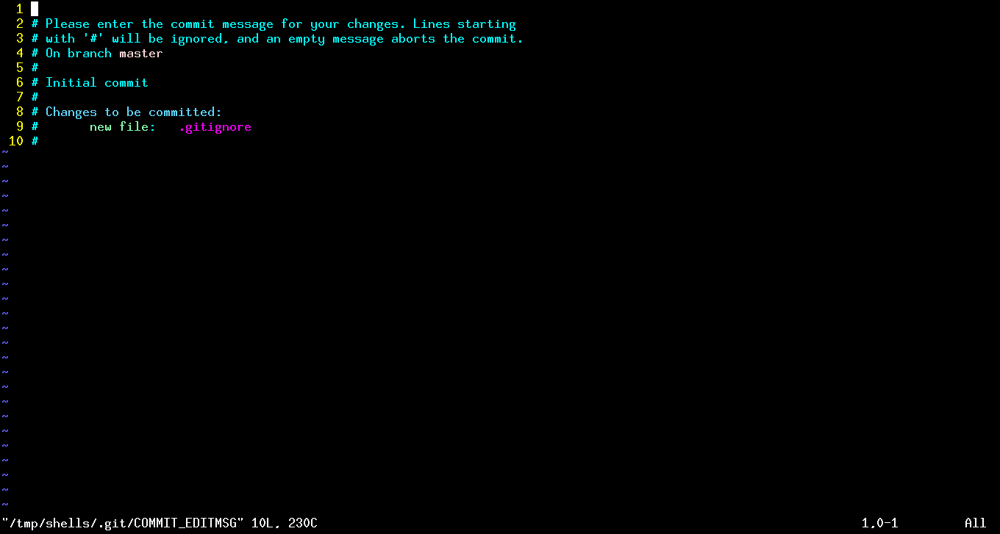
vi에서 탈출하려면, 저장하지 않고 나가기는데:q!을 타이핑한다. 만약 화면에:q!이 텍스트로 나타난다면,ESC를 누루고 나서,:q!을 타이핑한다. -
만약 쉘 윈도우 하단에
(Fundamental) ----이 보인다면,emacs혹은xemacs텍스트 편집기에 있다.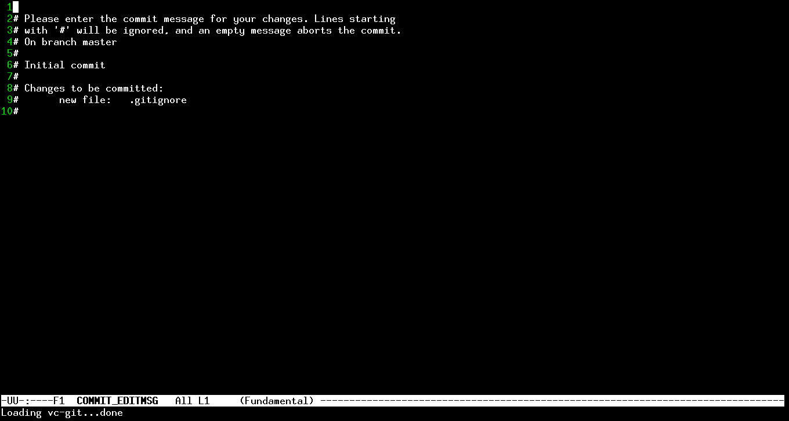
emacs혹은xemacs에서 탈출하려면,CTRL-X CTRL-C을 누른다. 만약 저장되지 않은 변경사항이 있다면, 저장할 것인지 질문을 받게 된다 - 저장하려면y를 누르거나,n하고 나서yes를 타이핑해서 저장하지 않고 끝낸다.콘솔(console)에서 GUI 호출하기
Emacs에는 그래픽 사용자 인터페이스 모드가 지원된다. 프롬프트에서 호출하면, Emacs를 종료할 때까지 프롬프트가 명령에 응답하지 않는다.
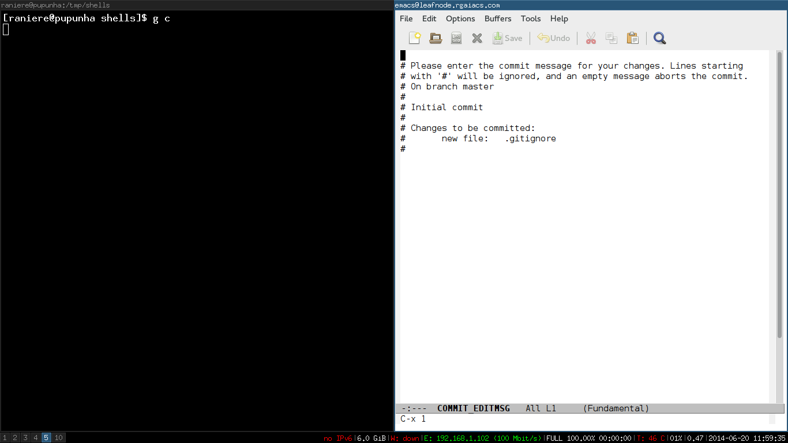
파이썬
-
만약 쉘 프롬프트가
>>>이면,python에 있다.python에서 탈출하려면,exit()혹은CTRL-D를 타이핑한다. -
만약 쉘 프롬프트가
...이면,python내부 열려있는(unclosed) 환경상태다.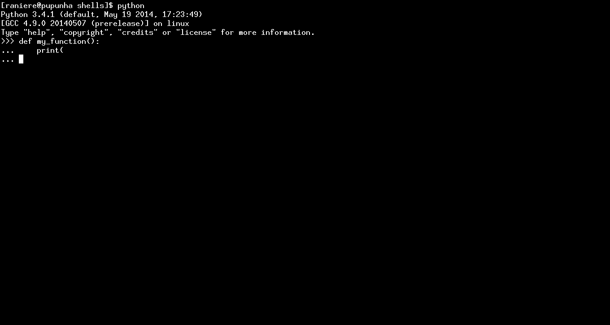
환경을 중단하려면,
CTRL-C를 타이핑한다. -
만약 쉘 프롬프트가
In [123]:이면,ipython에 있다.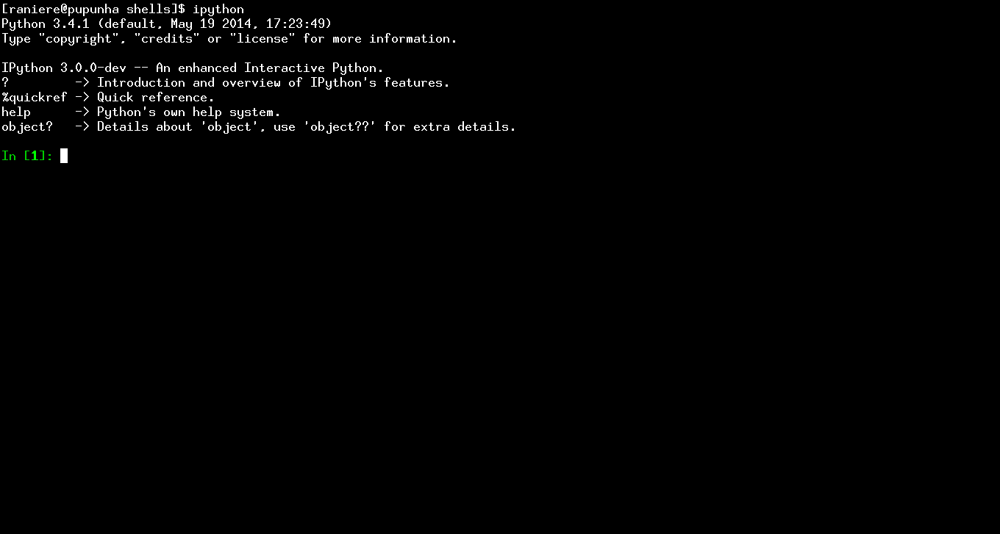
ipython에서 탈출하려면,exit(), 혹은CTRL-D을 누루고 나서y를 누른다. -
만약 쉘 프롬프트가
...:이면,ipython내부 열려있는(unclosed) 환경에 있다.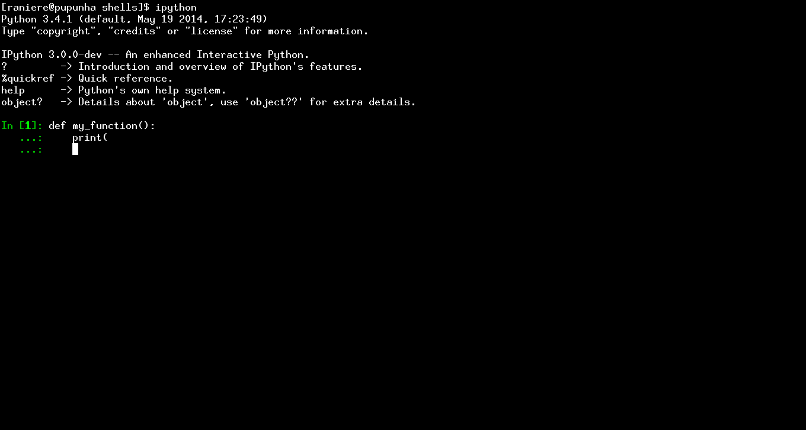
환경을 중단하려면,
CTRL-C를 타이핑한다.
R
-
만약 쉘 프롬프트가
>이면,R에 있다.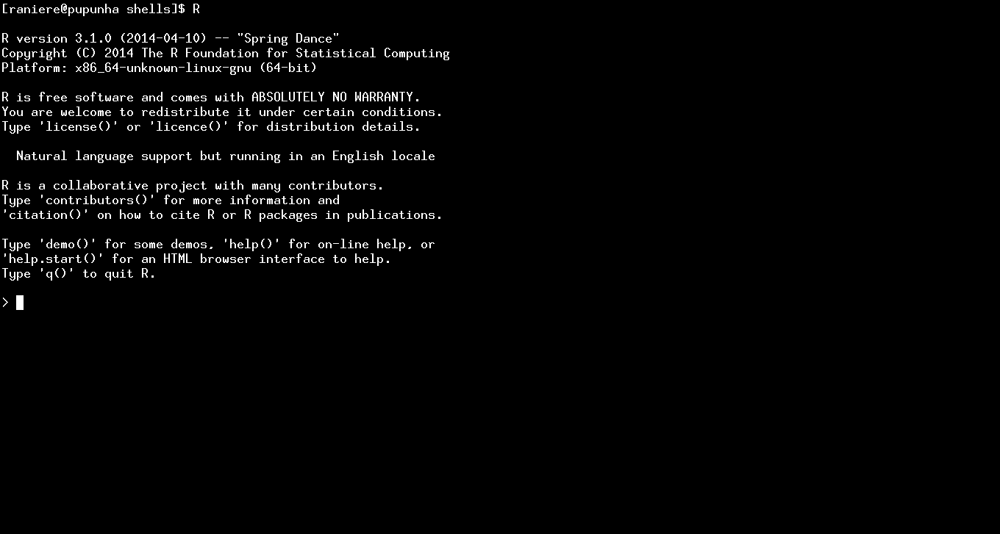
R에서 탈출하려면,q()을 타이핑한다.만약 작업공간(workspace)을 저장할지 묻는다면,y를 눌러 저장하거나,n를 눌러 저장하지 않는다. -
만약 쉘 프롬프트가
+라면,R내부 열려있는(unclosed) 환경에 있다.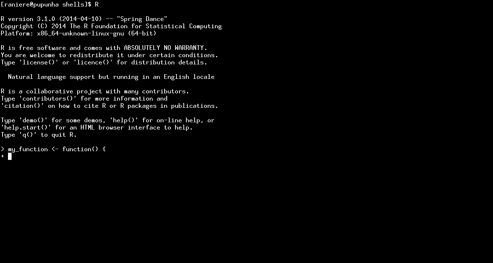
환경을 중단하려면,
CTRL-C를 타이핑한다.